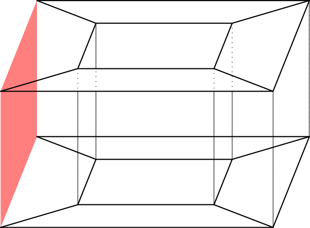

January 29th
Today I learned a proof (of the basic fact) that every natural number occurs as the genus of some graph. This is motivated by the synthesis of two approaches: on one hand, we can note that the genus of a graph is really the genus of the surface which the graph is a skeleton. On the other hand, we note the following embedding of $Q_4$ (from yesterday) onto a torus.
This forms the skeleton of the torus, and it gives ideas on how to generalize this to more holes. Specifically, we consider the following sequence of graphs.
Call this sequence of graphs $T_0,T_1,T_2,\ldots.$ We claim that the genus of $T_n$ is $g_n=n.$
It should be somewhat clear from the diagrams given that the genus of $T_n$ is at least upper-bounded by $n,$ for we have provided an embedding. We will be more rigorous about this later (and do bridge-making, as with yesterday), but for now we will deal with upper-bounding the genus. This is done with the Euler characteristic. Consider the following "module.''
Here the red face signifies that we have subtracted off the leftmost vertices and edges of the normal $Q_4.$ Then $T_n$ (formally) is made of a $T_0$ attached with $n$ of the above modules to the left. Note that the subtracted vertices and edges are (exactly) made up by the $T_0$ on the left end followed by the right side of the modules thereafter. The awkward definition of the module ensures no double-counting.
So to count vertices and edges, we merely note that the module has $V=\#V(Q_4)-4=12$ and $E=\#E(Q_4)-4=28.$ Thus, for $T_n,$ we have\[V_n=\underbrace4_{T_0}+\underbrace{12n}_{\text{modules}},\qquad E_n=\underbrace4_{T_0}+\underbrace{28n}_{\text{modules}}\]To bound faces, we remark that $Q_4$ is bipartite, so our module is bipartite. Additionally, we can attach modules together in a way that respects the coloring by flipping the colors. For example, here is $T_2$ colored.
This pattern continues; we do not bother being too rigorous here. Anyways, this means that faces have degree at least $4,$ so $4F_n\le2E_n,$ and $F_n\le2+14n$ by handshake. We remark that all faces are quadrilaterals in our embedding, so we expect this estimate to be safe.
It follows from the Euler characteristic that\[2-2g_n=V_n-E_n+F_n\le(4+12n)-(4+28n)+(2+12n).\]This rearranges to $g_n\ge n,$ which establishes the needed lower bound.
To close, we provide another way to see the embedding, which is essentially a generalization of the $Q_4$ embedding by building bridges. In words, we can build a bridge between each of the inner faces of the modules, and with $n$ modules, this makes $n$ bridges, completing the embedding. Visually, we begin by lying a $T_n$ flat, as such.
Here we have repressed the edges from the top to the bottom because they are the problematic ones. In this representation, we will flip the bottom half to its bottom on top. This lets us connect the bottom of the top of $T_n$ with the top of the bottom, and vice versa, as follows.
Now we build a bridge between the corresponding inner faces of each module. This lets us connect the remaining vertices, as follows.
This completes the embedding, which requires a total of $n$ bridges. Thus, $g_n\le n$ as well, so we conclude $g_n=n,$ which is what we wanted.